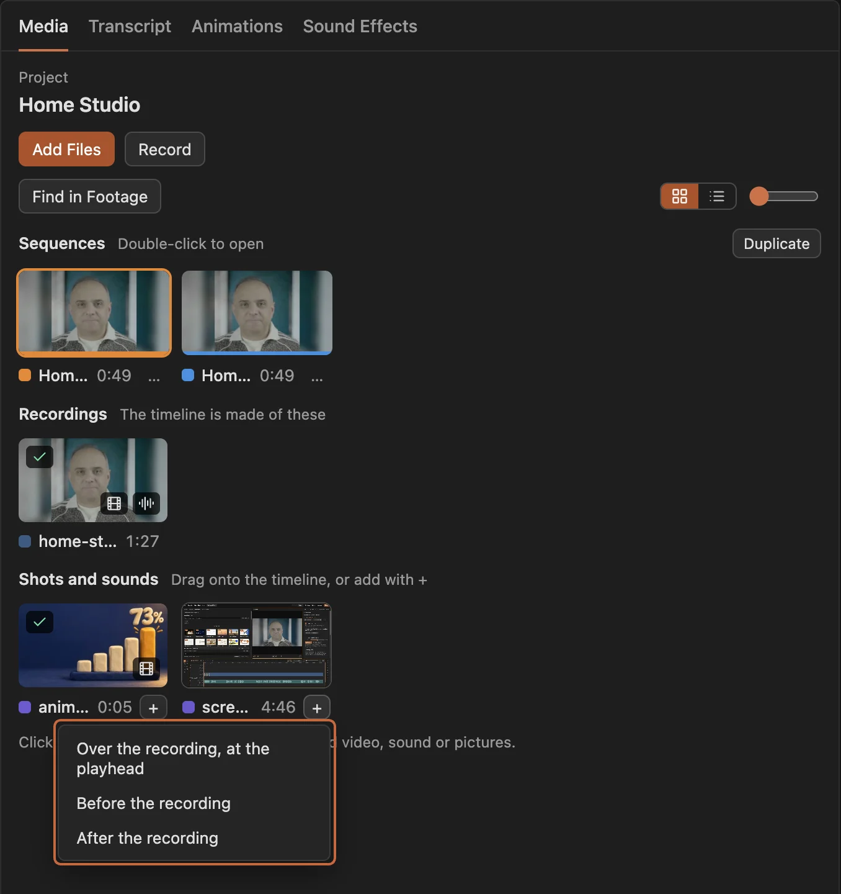
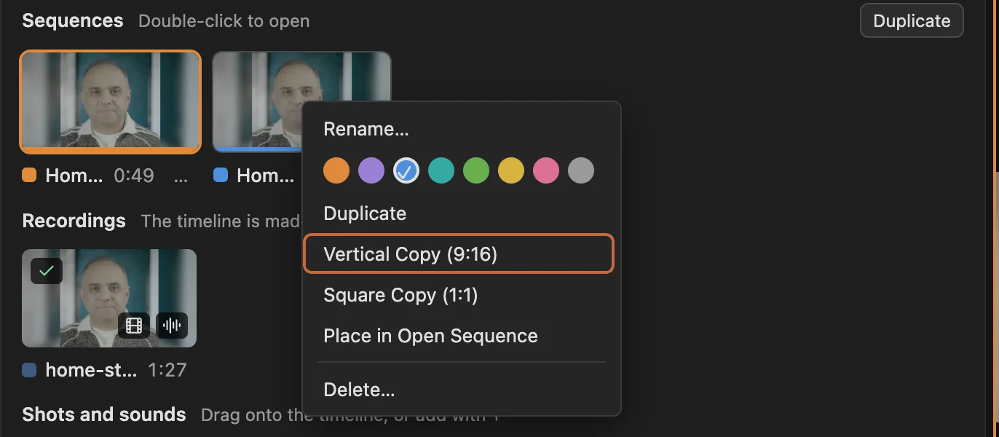

Media
The Media tab holds everything the project uses: your recordings, the shots and sounds you add, and the project's sequences.

Recordings, shots and sounds
- Recordings: the timeline is made of these. The first video or sound you drop becomes the project's recording; it is what the transcript and the automatic cut work on.
- Shots and sounds: extra footage, pictures, music and sounds to put over or beside the recording. Drag one onto the timeline, or add it with +.
To add files, press Add Files, drop them on the tab, or click an empty place in it. Video, sound and pictures all go in.
Add to the Timeline
The + under a shot opens Add to the Timeline:
- Over the recording, at the playhead
- Before the recording or After the recording
- for a sound: At the playhead, on A2
Right-click a file for New Project from This File and Delete. Record and Find in Footage sit at the top of the tab (Record screen and camera, Find in footage).
A separate microphone
If you recorded your voice apart (a clip-on mic, a recorder), right-click that sound and choose Line Up with the Recording (as a Microphone). It is matched to the recording by its sound and replaces the camera's sound. The Sound tab can switch back.
Sequences
Sequences lists the project's timelines. Double-click one to open it. The … beside it opens a menu with Duplicate, Vertical Copy (9:16), Square Copy (1:1), Place in Open Sequence, Rename…, a colour and Delete…. A project keeps at least one sequence. More in Sequences.

Views
View switches between Thumbnails (small, medium or large) and a List with columns: colour label, kind, name, length, format and In use, which marks what is on the timeline.